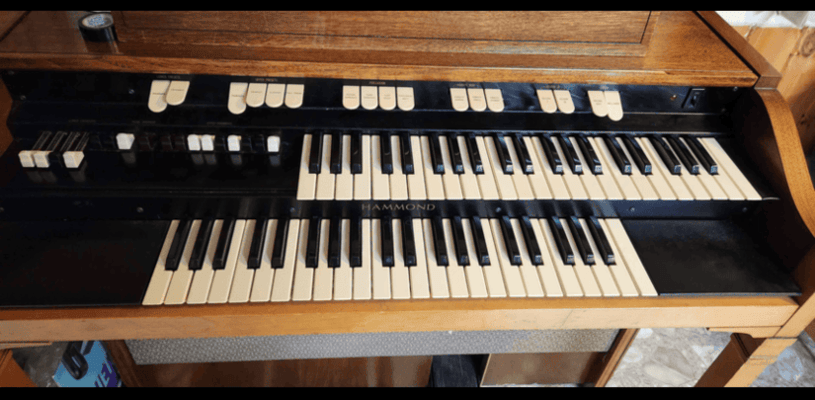
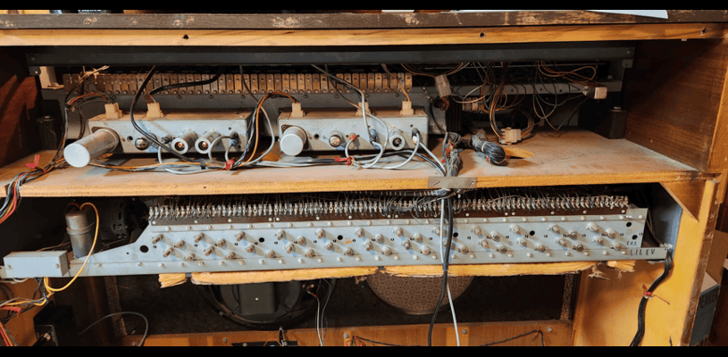
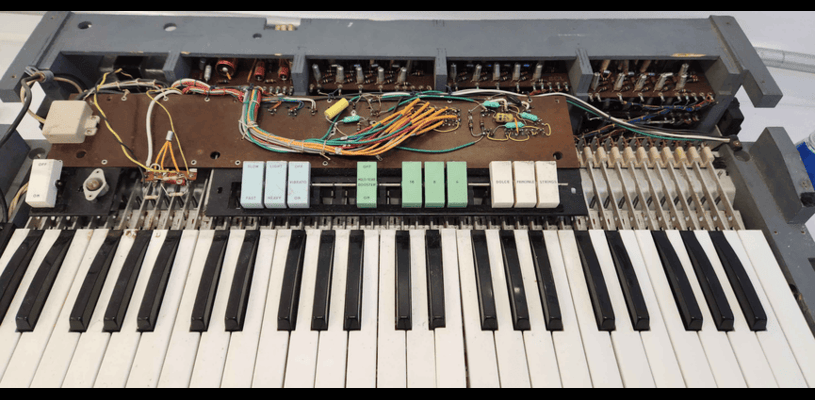

Production Starts
Published on November 30, 2024
Edits made on December 08, 2024
After testing some instrumental material in the digital recording space I decided I wanted to push through with a full album but made some creative decisions.
Firstly the instrument tracks will be recorded on Reel to Reel and then digitized into the Digital Audio Workstation. This decision was made to get accurate representations of harmonic distortion, natural analog saturation, and tape hiss. I could use digital recreations of tape saturation and such, but that's no fun so why not! Will spare the details, there is a fair bit of technical stuff there.
Second and last, I purchased a drum kit. I felt an immense dissatisfaction with digital drums, they lack the human touch and sound very boring and robotic to me. No one can play that perfect all the time, coupled with the lack of dynamics and it becomes quite limiting. Though it does give me ideas for using digital drums for other purposes, it is not within the scope of this project. So as I do with all instruments, I will learn as I go, it will come naturally with slow practice.
That's all for this post, I wouldn't expect any updates on the album itself until it's released. I have the moto of letting the work speak for itself.
New Aquisition
Published on November 7, 2024
Second post and there is gonna be a lot here. Over the past few months I got several new instruments and equipment that would help me greatly in my Music projects! Exibit A, the modded Hammond L-122 Drawbar Organ!
So this model though not as great as the sought after B3's and what not is still just as good in my opinion. This 1963 model of the Hammond Organ was intended to be grandma's home organ but I made some modifications for convenience. Takes up less space, is still 250lbs but the sound from Hammonds signature tonewheel generator is unmatched. Before we go into what I did first lets see what the inside looks like! 
Has a literal motor and vacuum tubes. That big metal thing in the middle is the tonewheel generator. Pictured is also the percussion unit and the vibrato unit. You will notice tabs for those settings in the frontal view. Expensive and hard to maintain and find parts for. Though surprisingly vacuum tubes aren't too bad to find and don't cost as much as you would think. Moving on to the second photo of the innards.

Missing a speaker, but unless I am using it like grandma's organ it's not an issue. In the image you will see the amp/preamp and power transformer also the reverb spring. Mounted on the side is the modification I installed.
A simple modification, but it allows for lineout and has a low-pass filter out for bass amps. Allows me to easily hook up amps of all kinds and in the futureI hope to use a Leslie Speaker. It required some solder work and some schematic reading but it works great, I currently use a Fender Modeling amp to create a distinct sound. Maybe you might hear it in the future! But if you thought I was done, think again. Because my latest project is this!
Interestingly... this thing is quite rare! It's a version 1 Farfisa Mini Compact and not many was made, a friend of mine had one and didn't have the time to fix it. It sat in a storage in New Hampshire and rats got to it. I have since cleaned it since I took the photo and you can't see it but there is a cover and the innards are exposed. It should look like this!
I have since cleaned it up a bit and started electrical work on it. But basically we made a deal for it. It is so rare that I found this photo on this old website here. Folds up into a suitcase for travel, it's very cool and has a very aggressive biting sound. Or so I have heard, still working on the electrical part and it uses germanium transistors. Expensive now and no, I can't subsistute silicon ones due to the specific electrical requirements. I will spare all the details but it needs some work and I expect it to be done after christmas.
The last thing I aquired which I don't have a photo for is a reel to reel tape recorder for analog recordings. I don't got much else to say about that, do with that info what you will. Anyways if you made it to the end, you got to see some pretty cool stuff! I have no idea how to end a blog post so I will just leave it at that.
First Blog Post
Published on November 6, 2024
So I have a programming class in college. I thought, I have been doing a lot of music projects lately, might as well make a dedicated website for it! Though being forced to use all the elements I have learned in the course kind of made it so I had to come up with some bull ways to implement it, but who knows it might be reflective of what it's like to meet the demands of a web dev project. But I can't complain, this is some easy stuff and sure beats working with Java... or 6800 Assembly. I love those old computers but never again! Though I procastinated waaaay too much with this portfolio assignment. I guess I should state what kind of music I plan to create.
It is kind of hard to describe, I would say experimental or Avante Garde. But it might be better to state my inspirations. I love progressive rock, psychedelic rock, jazz, R&B, Punk as far as genre's go. But I have a heavy emphasis on experimenting and creating new sounds or breaking established music rules. Bands that inspire me the most are The Doors, The Velvet Underground Emerson, Lake, and Palmer, Pink Floyd (Mostly the Syd Barret Lineup), Frank Zappa and the Mothers, and Deep Purple (Mark I and Mark II lineups), The Clash, Ramones, Various Jazz, R&B, and Punk artists, nothing specific aside from what is mentioned. I have loads of different songs and albums in a playlist and some vinyls that I got for dirt cheap before it made a comeback.
As for the instruments I play Electric Bass (One I am most experienced in), Electric Guitar (Absolutely crap at), and keyboards (though I favor Electric Organs over synths, skill wise not bad). I still crosstrain myself between all 3 and it's rough, but I have fun doing it so that's all that matters. I don't plan to update this blog much aside from bigger announcements so keep a look out!